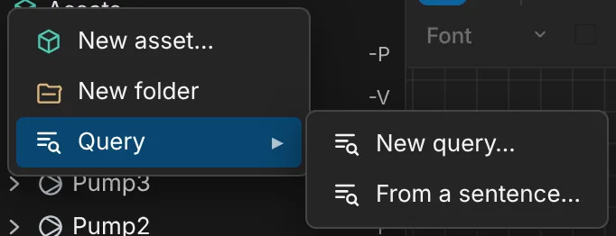
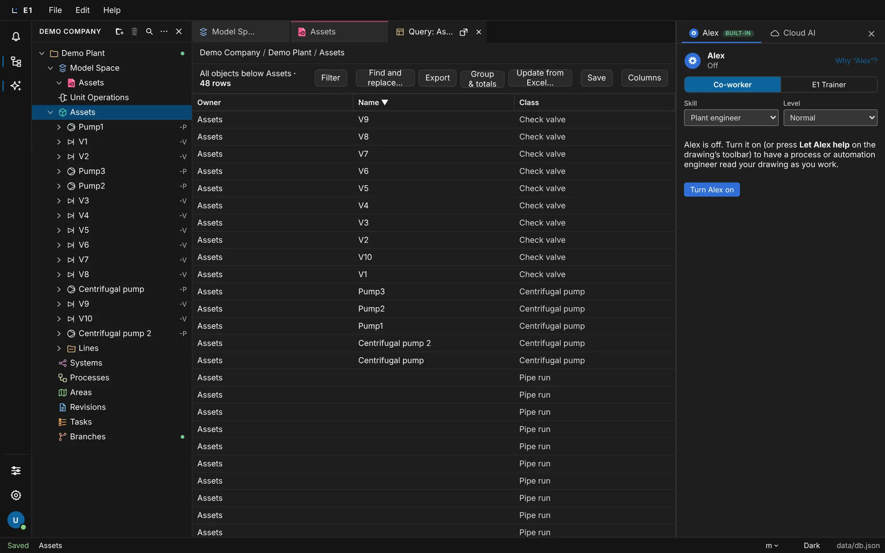
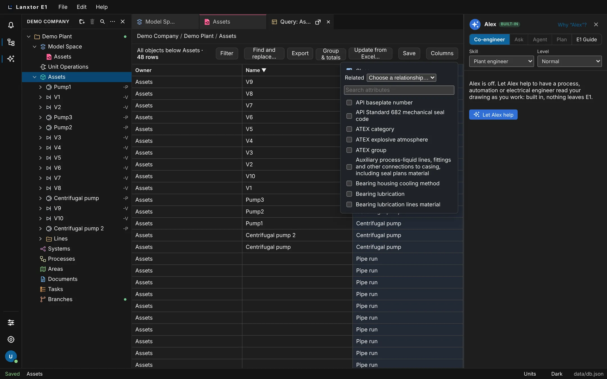
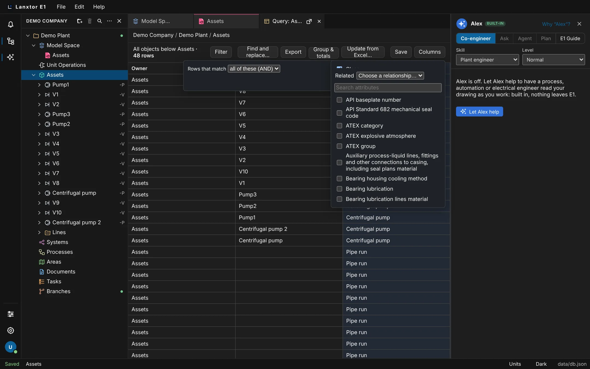

Academy / User guide / Lists and queries
6. Lists and queries
Any list is a live query of the model: columns, filters, grouping, editing like Excel, templates, and Excel export and import.
About this guide
In E1 a list is not a separate file: it is a live query of the project's objects. You pick where it starts, choose the columns, filter, group and total, edit the cells like a spreadsheet, save the layout as a template, and move the table to and from Excel.
Typical workflow
- Open a query on a section, folder or object, and sort it.
- Add columns: attributes, engineering columns and catalog columns.
- Filter the rows, read the summary in words, and use Ask when opened for values you change often.
- Group and total the rows, then save the query as a template for yourself, the project or the organization.
- Change values in the table: type, paste from Excel, fill down or drag the fill handle, cut, copy and paste, set many cells, find and replace, and move objects. Each change is one undo step.
- Export to Excel, change the file, and update the project from it; bring in new rows with Import Excel….
A saved query can be issued as a list document with its own revisions and PDF: see List documents.
- Before you start
- A project with objects in it, for example the Assets section of Demo Plant.
- Who
- Anyone who may view the project can query it. Changing cells needs a project role that may edit objects; exporting needs a role that may export.
Open a query with New query…
A query is a live table of every object below the place you start from. It opens in its own tab, keeps its columns and sort when you reload, and changes as the model changes.
- Where
- Explorer → right-click a project, section, folder, 2D space or object → Query ▸ New query…
- Who
- Anyone who may view the project
- Before you start
- A project with objects is open in the explorer.
Steps
| # | Action | Expected result |
|---|---|---|
| 1 | In the explorer, right-click Assets. | A menu opens with Query and an arrow ▸. |
| 2 | Hover Query (or click it, or press the right arrow key on it). | A submenu opens. It lists the saved templates, if any, then New query…. With nothing saved, New query… is the only item: there are no built-in lists. |
| 3 | Click New query…. | A tab Query: Assets opens. The bar reads “All objects below Assets · N rows”. The columns are Owner, Name and Class, sorted by Name ascending (▲). |
| 4 | Scroll down the table. | Rows load 200 at a time; a row not loaded yet shows “…” for a moment. |
| 5 | Reload the page. | The query tab comes back with the same columns and sort. |
| 6 | Right-click the object V3 → Query ▸ New query…. | A second query opens; its bar reads “All objects below V3”. |


The Name column shows an object's tag, or its name when it has no tag. Ports and objects in the Bin are not rows. An empty result reads “No objects below <start>.”.
The Query item is not offered in the Bin, on a case or on a voided object.
A query tab whose definition is gone shows “This query is no longer open. Open it again from the explorer: right-click, Query, New query.”.
Speed has been measured up to 20,000 objects; very large projects may be slower.
Sort by a column
Click a column header to sort the rows ascending or descending.
- Where
- Query tab → a column header
- Before you start
- A query is open (see New query…).
Steps
| # | Action | Expected result |
|---|---|---|
| 1 | Hover the Name header. | The hover text reads “Click to sort; right-click to filter on this column”. |
| 2 | Click Name. | The rows sort descending and the header shows ▼. |
| 3 | Click Name again. | The rows sort ascending and the header shows ▲. |
| 4 | Reload the page. | The sort is kept. |
Owner, Name, Class, Tag and attribute columns sort. Designation, Owner path, related columns, count columns and catalog columns do not: their hover text reads “This column does not sort yet” and a click changes nothing.
Choose the columns
Add properties, attributes and related objects as columns with the Columns picker.
- Where
- Query tab → Columns
- Before you start
- A query is open.
Steps
| # | Action | Expected result |
|---|---|---|
| 1 | Click Columns. | The Columns panel opens: Properties checkboxes (Class, Tag, Designation, Owner path, Catalog item, Catalog version, Catalog state), a Related dropdown “Choose a relationship…”, a Search attributes box and the list of attributes. |
| 2 | Type Design pressure in Search attributes. | The attribute list narrows to matching names, for example “Design pressure / In”. |
| 3 | Tick the first attribute in the list. | A new column with that attribute's name appears at the right of the table. |
| 4 | Untick it. | The column goes. A sort, group or total on that column goes with it. |
| 5 | Click Columns again. | The panel closes. |

While the attributes load the panel reads “Loading the attributes of these objects…”; when there are none, “These objects have no attributes.”.
Engineering columns: Designation, Owner path and related objects
Show an object's designation, its owner path, and what it connects to, by name or as a count.
- Where
- Query tab → Columns → Properties and Related
- Before you start
- A query on Assets is open.
Steps
| # | Action | Expected result |
|---|---|---|
| 1 | Click Columns and tick Designation. | A Designation column appears. |
| 2 | In Related, choose Connects to. | Two checkboxes appear: Their names and How many. |
| 3 | Tick Their names. | The headers read Owner, Name, Class, Designation, Connects to. |
| 4 | Scroll to a pipe run's row. | Its Connects to cell lists the objects at its ends, a port as “object · port”, for example “Pump1 · suction”. The cell is grey; its hover text says why it cannot be edited. |
| 5 | Tick How many. | A column headed “Count: …” with the relationship's name appears, with a number per row. |
| 6 | Click the Connects to header. | The row order does not change. |
| 7 | Tick Owner path. | An Owner path column shows where each object sits in the project. |
Designation, Owner path, related and count columns cannot be sorted, grouped or filtered.
Attributes of the owner or of a related object can be asked for through Cloud AI or the API, but are not in the Columns picker yet.
Catalog columns
Show which catalog item an object was made from, its version and whether an update is available.
- Where
- Query tab → Columns → Properties → Catalog item, Catalog version, Catalog state
- Before you start
- Some objects were made from a catalog item (see Catalogs).
Steps
| # | Action | Expected result |
|---|---|---|
| 1 | Open a query on the section that holds the pumps made from a catalog item. | The query shows the pumps. |
| 2 | Click Columns and tick Catalog item, Catalog version and Catalog state. | Three columns appear. Each pump shows its catalog item, its version (for example “1 (newest 2)”), and a state such as “update available” or “differs”. |
There is no menu item called “Catalog columns”: these are the three checkboxes under Properties.
The exact cell texts are taken from review check L15; they were not seen on screen while writing this guide.
Filter rows with AND, OR and NOT
Build a filter from conditions joined by AND or OR, each one optionally negated with NOT.
- Where
- Query tab → Filter, or right-click a Name, Class or attribute header
- Before you start
- A query is open.
Steps
| # | Action | Expected result |
|---|---|---|
| 1 | Click Filter. | The Filter panel opens: “Rows that match” with Match set to all of these (AND), and the buttons Add condition, Apply and Cancel. |
| 2 | Click Add condition. | “Condition 1” appears with NOT, Field, Operator, Value, Ask when opened and ×. |
| 3 | Set Field to Name, Operator to contains, type pump in Value, and click Apply. | The panel closes. Below the bar the filter in words reads “Name contains pump”. The row count drops and every Name contains “pump”. |
| 4 | Click Filter, tick NOT on Condition 1, and click Apply. | The summary contains “NOT”. The count equals all rows minus the pumps. |
| 5 | Click Filter, add a second condition with Field Class and Operator is, and type part of a class name in Value. | A list of matching classes appears (“Type to find a class”); you pick the class from it, never type its key. |
| 6 | Set Match to any of these (OR) and click Apply. | Rows that match either condition are shown; the summary joins the conditions with OR. |
| 7 | Right-click the Class header. | The Filter panel opens with a new condition on Class. |
Operators
Depending on the field: is, is not, contains, does not contain, starts with, ends with, matches (* ?), is one of, is empty, is not empty, =, ≠, <, ≤, >, ≥, between. is one of takes a list such as a, b, c; between shows a second box “and”. Quantities have a Unit and are compared after unit conversion, so 1 bar matches 100 kPa. An empty value never matches a comparison, but does match is not, does not contain and ≠.

This filter language is what E1 calls expressions: typed, unit-aware conditions. Calculated columns are not in the query view.
A filter with groups inside groups, for example one made by Cloud AI, is shown in words. The builder then says “This filter has groups inside groups; it is shown above in words. Clear it to build a new one here.” and offers only Clear filter and Close.
Read the filter in words and clear it
The active filter is shown above the table in plain language; Clear filter removes it.
- Where
- Query tab → the line below “All objects below …”, and Clear filter
- Before you start
- A filter is applied (see Filter).
Steps
| # | Action | Expected result |
|---|---|---|
| 1 | Read the line below “All objects below …”. | It shows the filter in words, for example “Name contains pump”. |
| 2 | Click Clear filter. | All rows return, the summary disappears, and the Clear filter button goes. |
Clear filter is only shown while a filter is set.
Ask when opened: one query for many values
Leave a filter value out so whoever opens the query types it in each time.
- Where
- Filter panel → a condition → Ask when opened
- Before you start
- The Filter panel is open with a condition on Name contains.
Steps
| # | Action | Expected result |
|---|---|---|
| 1 | Tick Ask when opened on the condition. | The value box is replaced by “Asked each time the query opens”. |
| 2 | Click Apply. | A form “This query asks for:” appears with a box labelled Name and a Show rows button. |
| 3 | Type pump and click Show rows. | The same rows appear as with “Name contains pump”. |
For a Class condition the form has a Class box: type “PUMP”, pick “Pump” from the list, and the box reads “Pump”.
The values you type are kept while the tab is open. Apply and Clear filter reset them.
Group & totals
Group the rows by a column and add a sum, minimum, maximum, average or count per attribute.
- Where
- Query tab → Group & totals
- Before you start
- A query on Assets is open.
Steps
| # | Action | Expected result |
|---|---|---|
| 1 | Click Group & totals. | A panel opens with Group by (“No grouping”) and one Total of … dropdown per attribute column. |
| 2 | Set Group by to Class. | Header rows such as “Centrifugal pump” appear with “N rows”; the rows under each header are of that class. |
| 3 | Close the panel, add an attribute column with Columns, and open Group & totals again. | A Total of <attribute> dropdown is shown for the new column. |
| 4 | Set it to Count. | A “Totals” row under the table shows “Count: N”. Hovering the total reads “Count of every row”. |
| 5 | Reload the page. | The grouping and the total are kept. |
The choices are None, Sum, Minimum, Maximum, Average and Count. Sum, Minimum, Maximum and Average are offered only for number and quantity attributes. Totals count every row, not only the rows loaded, and quantities are shown in the attribute's unit.
One level of grouping only, and groups cannot be collapsed.
Save a query as a template and reopen it under Query ▸
Save the columns, filter, sort and grouping as a named template for yourself, the project or the organization.
- Where
- Query tab → Save
- Who
- Anyone who may view the project for For me; a role that may configure the project for For this project (everyone on it); library rights for the organization
- Before you start
- A query filtered on Name contains
pump.
Steps
| # | Action | Expected result |
|---|---|---|
| 1 | Click Save. | The Save query form opens with Name, the choices For me (selected), For this project (everyone on it) and For the organization (every project; published to the company library), and the buttons Save template and Cancel. Save template is off while the name is empty. |
| 2 | Type Pumps, choose For this project (everyone on it), and click Save template (or press Enter in Name). | The form closes and the bar starts with “Pumps ·”. |
| 3 | Right-click the project in the explorer and hover Query. | The submenu lists Pumps, then New query…. |
| 4 | Click Pumps. | A query opens on the project with “Name contains pump” and only pump rows. |
A template saved For me is listed as “<name> (mine)”. A saved project template can be shown as a list document with revisions (see List documents).
Templates cannot be renamed, copied or deleted from a list yet.
The organization-wide query has no Save button.
Edit a cell like in Excel
Double-click or press F2 on a cell to change a name or an attribute value; Ctrl+Z undoes it.
- Where
- Query tab → double-click a cell, or select only that cell and press F2
- Who
- A project role that may edit objects
- Before you start
- A query filtered on Name is
pump1, with the column “Design pressure / In” added from Columns.
Steps
| # | Action | Expected result |
|---|---|---|
| 1 | Hover the Class cell. | The cell has a light blue background, and the hover text reads “Read only: The class is fixed; Replace on the drawing changes it.”. |
| 2 | Hover the Design pressure cell. | The hover text reads “Double-click or F2 to edit”. |
| 3 | Double-click the Design pressure cell, type 16, and press Enter. | The cell shows “16 bar(g)”: a bare number gets the attribute's unit. |
| 4 | Double-click it again, type 3 m, and press Enter. | An alert in the cell says the value is not a unit of pressure, and nothing is saved. |
| 5 | Press Esc. | The cell shows “16 bar(g)” again. |
| 6 | Click the table and press Ctrl+Z (⌘Z). | The cell is empty again: one undo step per edit. |
| 7 | Click the Design pressure cell once and type 20. | Nothing happens: typing on a selected cell does not start an edit. |
| 8 | Press F2. | The cell opens for editing. F2 works only when exactly one cell is selected. |
Enter saves, Esc cancels, and leaving the cell (a click elsewhere, Tab) saves. Tab does not move to the next cell; it only leaves the edit. A Name cell renames the object; a tagged name is read-only. The rows refresh when anyone changes the project.
Paste a block from Excel
Paste cells copied from Excel into the table; a preview shows every change or problem first.
- Where
- Query tab → select a cell → Ctrl+V (⌘V)
- Who
- A project role that may edit objects
- Before you start
- A query with a Design pressure column. In Excel, three cells in a column hold
10,lots,12.
Steps
| # | Action | Expected result |
|---|---|---|
| 1 | Copy the three Excel cells, click the top Design pressure cell, and press Ctrl+V (⌘V). | A Paste dialog “Paste 3 cells” says “Nothing is applied while this problem remains:” with a problem saying the value is not a number. Apply is off. |
| 2 | Click Cancel. | Nothing changed. |
| 3 | In Excel change lots to 11, copy the three cells again, and paste. | The dialog says “3 cells change, as one step you can undo.”. |
| 4 | Click Apply. | The cells read 10 bar(g), 11 bar(g) and 12 bar(g). |
| 5 | Click the table and press Ctrl+Z (⌘Z) once. | All three cells are back as before. |
The block fills from the first selected cell. One copied value pasted into several selected cells fills each of them.
If someone else changed one of the rows meanwhile, the dialog says “N rows were changed by someone else since; nothing was applied.” and offers Apply the other rows. A paste that changes an Owner cell is reported as a problem.
Select many cells and Set value…
Select a block of cells and give them all one value in one undoable step.
- Where
- Query tab → select cells → Set value…
- Who
- A project role that may edit objects
- Before you start
- A query with an attribute column.
Steps
| # | Action | Expected result |
|---|---|---|
| 1 | Click a cell, then Shift-click a cell two rows below. | A block of three cells is selected. A bar shows “3 cells selected” with Set value…, Fill down and Fill right. |
| 2 | Ctrl (⌘)-click one more cell in the column. | It is added to the selection: “4 cells selected”. Ctrl (⌘)-clicking a selected cell takes it out again. |
| 3 | Click Set value…. | A dialog “Set 4 cells” opens with a box “Value for the selected cells”. |
| 4 | Type a valid value. | The preview reads “4 cells change, as one step you can undo.”. A value that is refused shows “Nothing is applied while this problem remains:” with the reason. |
| 5 | Click Apply. | All four cells show the value. One Ctrl+Z (⌘Z) takes them all back. |
Cells are selected with clicks only: dragging across cells does not select them. Use Shift-click for a block.
Fill down and Fill right
Copy the top or left cell into the selected cells, counting on values that end in a number.
- Where
- Query tab → select cells → Fill down or Fill right
- Who
- A project role that may edit objects
- Before you start
- The top Design pressure cell holds 10 bar(g).
Steps
| # | Action | Expected result |
|---|---|---|
| 1 | Click the top Design pressure cell, then Shift-click the cell two rows below. | Three cells are selected; the selection bar shows Fill down. |
| 2 | Click Fill down. | The Fill dialog says “2 cells change, as one step you can undo.”. |
| 3 | Click Apply. | All three cells read “10 bar(g)”. |
| 4 | Press Ctrl+Z (⌘Z). | The two filled cells are back as before. |
Select the cells with a click and Shift-click (or Ctrl (⌘)-click); dragging does not select. Fill down copies each column's top cell; Fill right copies each row's left cell. A value ending in a number counts on (P-101, P-102, …, keeping leading zeros); any other value is copied.
Drag the fill handle to copy a value down
As in Excel: select a cell, then drag the small square at its bottom-right corner down over the cells below. When you let go, the value is copied into every cell you passed, at once, as one step you can undo. Hold Ctrl (⌘) as you let go to count on as a series instead (P-101, P-102, …).
- Where
- Query tab → select a cell or a block → drag the small square at the bottom-right corner of the selection
- Who
- A project role that may edit objects
- Before you start
- A query with a Design pressure column; the top Design pressure cell holds 10 bar(g).
Steps
| # | Action | Expected result |
|---|---|---|
| 1 | Click the top Design pressure cell. | The cell is outlined, with a small square at its bottom-right corner (the fill handle). Pointing at the square shows a cross. |
| 2 | Drag the square down three rows and let go. | While you drag, the cells you pass have a dashed outline. When you let go, all four cells read “10 bar(g)” and are selected; no dialog opens. A bar says “3 cells filled. Ctrl+Z undoes it.” with Fill series instead. |
| 3 | Press Ctrl+Z (⌘Z). | The three filled cells are back as before. |
| 4 | Click a Name cell that reads P-101 and drag its fill handle down two rows. | Both cells read P-101. |
| 5 | Click Fill series instead in the bar. | The two cells read P-102 and P-103, and the bar offers Copy cells instead. |
| 6 | Undo twice, then drag the handle again holding Ctrl (⌘) as you let go. | The cells read P-102 and P-103 straight away. |
The handle also drags up, right and left; it follows the direction you moved furthest. A block of several cells repeats down (A, B, A, B, …); as a series, two values such as V-1 and V-3 go on by the same step (V-5, V-7). Near the top or bottom of the table, the rows scroll as you drag. Esc or × closes the bar. Fill series instead is a second step: undo it to get the copied values back.
Grey striped cells (an attribute the object’s class does not have) are passed over: a fill down a column of pumps and pipe runs sets the pumps, and the bar says how many grey cells were passed over.
A fill over a cell that cannot be changed (a blue cell, such as Class), or with a value the column refuses, is not made: a Fill box lists each problem and Apply stays off. Click Cancel and drag a shorter or other range. The fill handle works on the rows loaded in the table, the ones you scrolled past.
Read-only cells are tinted blue
The table shows at a glance which cells you can change. A light blue cell is read only, such as Class. A grey striped cell is an attribute the object's class does not have, so there is no value to set. Click either one and a line above the table says why.
- Where
- Query tab → the table
- Who
- Anyone who may view the project
- Before you start
- A query of Assets with the columns Class and ATEX category, with pumps, valves and pipe runs in it; one pipe run has a tag such as L-001.
Steps
| # | Action | Expected result |
|---|---|---|
| 1 | Look at the Class column. | Its cells and its header have a light blue background, and the header shows a lock before “Class”. The grid lines between the cells stay visible. |
| 2 | Click a Class cell. | A line above the table reads “Read only: The class is fixed; Replace on the drawing changes it.”. |
| 3 | Look at the ATEX category column. | The cells of the pumps are white. The cells of the pipe runs and valves are grey with fine stripes: their classes have no ATEX category. The header has no lock, because some rows have the attribute. |
| 4 | Click a grey cell. | The line above the table reads “Not in this class: Pipe run has no ATEX category: there is no value to set here.”. |
| 5 | Click the Name cell that reads L-001. | It is light blue. The line reads “Read only: The Name column shows this object’s tag, so it is changed with Tag…: double-click the cell or press F2.” with a Tag… button. |
| 6 | Double-click the L-001 cell. | The Tag dialog of that pipe run opens. |
Name shows the tag when an object has one, else its name, so a tagged object's name is changed with Tag…, never by typing. Other blue cells: the designation, owner path, catalog and related-object columns, a count of related objects, and every cell of a project you may only view. A paste, fill or Set value… passes over grey cells and sets the objects that have the attribute; it stops with the reason on a blue cell.
E1 itself refuses a value for a blue or grey cell, whatever sends it (the table, a paste, Cloud AI or the API), so the colours are a guide, not the only guard.
Find and replace…
Replace text in one column or in the selected cells, with a count of the matches first.
- Where
- Query tab → Find and replace…
- Who
- A project role that may edit objects
- Before you start
- Three Design pressure cells hold 10 bar(g).
Steps
| # | Action | Expected result |
|---|---|---|
| 1 | Click Find and replace…. | The Find and replace dialog opens with Find, Replace with, In, Match case, Whole cell, Apply and Cancel. |
| 2 | Set In to “Design pressure / In”, type 10 in Find and 20 in Replace with. | The dialog reads “3 cells match in the rows loaded.”. |
| 3 | Click Apply. | The three cells read “20 bar(g)”. |
In offers the Name column and the attribute columns. With more than one cell selected, Only the selected cells is offered instead.
Find and replace works on the rows loaded so far. Scroll to the end first if the table is long.
Owner cell: open the object, or move it with F2
Double-click an Owner cell to open the object; press F2 to move it to another owner.
- Where
- Query tab → an Owner cell
- Who
- Anyone may open; moving needs a project role that may edit objects
- Before you start
- A query on Assets is open, and Assets holds a folder “Feed pumps”.
Steps
| # | Action | Expected result |
|---|---|---|
| 1 | Hover an Owner cell. | The hover text reads “Double-click opens the object; F2 moves it to another owner”. |
| 2 | Double-click the Owner cell of Pump1. | Pump1 opens in a tab named after it: its datasheet when its class has a designed layout, else its page. |
| 3 | Back in the query, click Pump1's Owner cell (“Assets”) and press F2. | A box “Move to owner” appears, offering the owner and object names of the loaded rows. |
| 4 | Type Systems and press Enter. | An alert says “A Centrifugal pump cannot be owned by Systems. It may be owned by Assets or a folder in Assets.”. |
| 5 | Type Feed pumps and press Enter. | The cell shows “Feed pumps”. |
| 6 | Click the table and press Ctrl+Z (⌘Z). | The owner is “Assets” again. |
Export a query to Excel or CSV
Download every row of the query as an Excel workbook or a CSV file, with an E1 id column.
- Where
- Query tab → Export → Excel (.xlsx) or CSV (.csv)
- Who
- A project role that may export. A restricted project asks you to sign in again first.
- Before you start
- A query is open.
Steps
| # | Action | Expected result |
|---|---|---|
| 1 | Click Export. | A menu opens with Excel (.xlsx) and CSV (.csv). |
| 2 | Click Excel (.xlsx). | “Exporting…” shows briefly, then an .xlsx file downloads. |
| 3 | Open the file in Excel. | Row 1 holds the view's columns plus E1 id, for example Owner, Name, Class, E1 id. There is one row per query row: all rows, not only those loaded on screen. Every cell is a value, never a formula. |
Keep the E1 id column: Update from Excel… uses it to match the rows. A CSV file opens in Excel with the right characters.
The file is made by a job on the server, which may wait its turn first when the server is busy. At most 20 jobs a minute per person, else You started more than 20 jobs in a minute; wait a minute and try again. The file is kept for 7 days, then The result of this job is no longer kept: results are kept for a week. Start the job again.
Update from Excel… with Check and Apply
Read an exported file back: Check lists every change row by row, Apply makes them in one undoable step.
- Where
- Query tab → Update from Excel…
- Who
- A project role that may edit objects
- Before you start
- You exported this query to Excel (see Export), changed Pump1's Name to “Pump1 checked” and saved the file.
Steps
| # | Action | Expected result |
|---|---|---|
| 1 | Click Update from Excel…. | The Update from Excel panel opens with the note “Pick a file exported from this view (Excel or CSV). Rows are matched by the E1 id column, else by a name only one row has.”, a File box, When a row has a problem (Change nothing (all or nothing) selected, or Change the other rows), and Check, Apply, Cancel. |
| 2 | Pick the file. | Apply is off and dimmed. Its hover text reads “Check the file first: Apply makes the changes Check shows”. |
| 3 | Click Check. | “Reading…” shows, then “Changes by row” lists “Row <n> · Pump1: Name: Pump1 → Pump1 checked”, and the summary reads “N rows read: 1 change in 1 row, 0 rows with problems.”. The table has not changed yet. |
| 4 | Click Apply. | The panel says “1 change made. Undo takes them back.”. |
| 5 | Click Close. | The explorer shows “Pump1 checked”. |
| 6 | Press Ctrl+Z (⌘Z). | The name is Pump1 again. |
Changing only a read-only column such as Class gives “Class: read only.” and the note “Nothing to apply: no change in the file can be made here. Each row above says why.”. Other messages: “Columns not in this view, not read: …”, “The file changes nothing in this view.”, and “The file is larger than 10 MB.”.
Update from Excel… changes existing rows only: it does not add or delete objects. Review check D5 asks to “add a row” here; new rows come in with Import Excel….
Columns are matched by their header only. To map columns by hand, use Import Excel….
This runs as a job on the server, which may wait its turn first when the server is busy. At most 20 jobs a minute per person, else You started more than 20 jobs in a minute; wait a minute and try again.
Import Excel…: bring a tag list into a section
Import an Excel or CSV tag list into a section: matching rows are updated, the others become new objects.
- Where
- A section's toolbar → Import
- Who
- A project role that may edit objects
- Before you start
- An Excel file with the columns Equipment, Design pressure and Remarks, and the rows Pump1 / 12 / checked and P-900 / 7.5 / new.
Steps
| # | Action | Expected result |
|---|---|---|
| 1 | Click the section Assets in the explorer (one click), then Import on its page. | The Import Excel dialog opens with the note “A tag list into a section: rows are matched by the E1 id, the tag, or a name only one object has; the others become new objects of the class you choose.”, File, Into, New rows are, Make rows that match nothing new objects (ticked) and When a row has a problem. |
| 2 | Pick the file and set Into to Assets. | Assets is the section; by default a section whose name contains “Assets” is chosen. |
| 3 | In New rows are, type Centrifugal pump in Search classes. | The first class that matches is chosen at once, letter by letter, so check that it reads Centrifugal pump. |
| 4 | Click Check. | “Checking…”, then the Column mapping table (“Column in the file” → “Fills”): Design pressure is guessed from its header, Remarks is at Leave out. |
| 5 | Set Equipment to Name (the tag, else the name) and click Check again. | The summary reads “1 change in 1 row, 1 new row, 0 with a problem.”. The rows read “Row n … · column: from → to”, the new one marked “(new)”. |
| 6 | Click Apply. | “1 change and 1 new object written. Undo (Ctrl+Z) takes them back.”. Pump1's design pressure is 12 and there is one more pump. |
| 7 | Click Close, then Edit → Undo. | Both the change and the new pump are gone. |
A header such as Tag, Tag No., Tag number or Item maps to the tag automatically. Changing a mapping or the class turns Apply off until you Check again.
A click outside the dialog closes it, and the file, the class and the mapping you set are lost.
This runs as a job on the server, which may wait its turn first when the server is busy. At most 20 jobs a minute per person, else You started more than 20 jobs in a minute; wait a minute and try again.
Export the project: every saved query in one workbook
Download one workbook for the project with a sheet per saved query.
- Where
- The project page's toolbar → Export
- Who
- A project role that may export
- Before you start
- The project has saved queries (see templates).
Steps
| # | Action | Expected result |
|---|---|---|
| 1 | Click the project in the explorer (one click), then Export on its page. | An .xlsx file named after the project downloads. |
| 2 | Open it. | It has one sheet per saved query you can see, each headed with the project, the query and the date. |
A long export says “The export is taking long; it goes on in the background.”. A section's own toolbar Export downloads the objects under it, for example “Assets.xlsx”.
Query over every project of the organization
One query over the objects of every project you may view, opened from the organization name.
- Where
- Explorer header → the organization name → Query ▸ New query…
- Who
- Anyone; the rows come from every project you may view
- Before you start
- You belong to an organization with more than one project.
Steps
| # | Action | Expected result |
|---|---|---|
| 1 | Hover the organization name at the top of the explorer. | The hover text reads “<organization>: click or right-click for the organization's menu”. |
| 2 | Right-click it, hover Query (or click it, or press the right arrow key on it) and choose New query…. | A query of objects from every project you may view opens, named “<organization> query”. The path bar starts with the organization's name. The last column, Project, is read-only. |
| 3 | Look at the query bar. | There is no Update from Excel… and no Save button. |
Edits, moves, fills, find and replace, and pastes each go to the row's own project, as one undo step per project. Groups and totals add up across projects; an average is only shown when one project has rows. Export reads every project you may export.
Until 2026-11-07 this was under a “Workspace” row in the explorer. That row is gone; the menu is on the organization name.
Queries from a sentence
Type a sentence such as “all pumps without a motor” and get the matching table.
Planned in roadmap stage 05.5b, “Queries from a sentence and templates through the API”. It is not built yet; today you build the filter in the Filter panel.
What you will be able to do
- Type a sentence such as “all pumps without a motor” and get the matching table.
- Read and save query templates through the API.